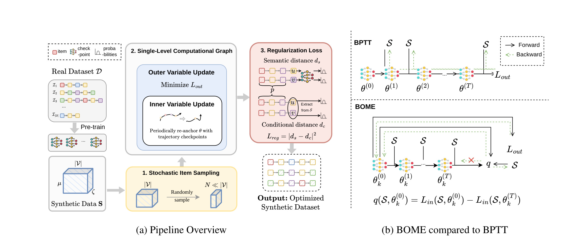
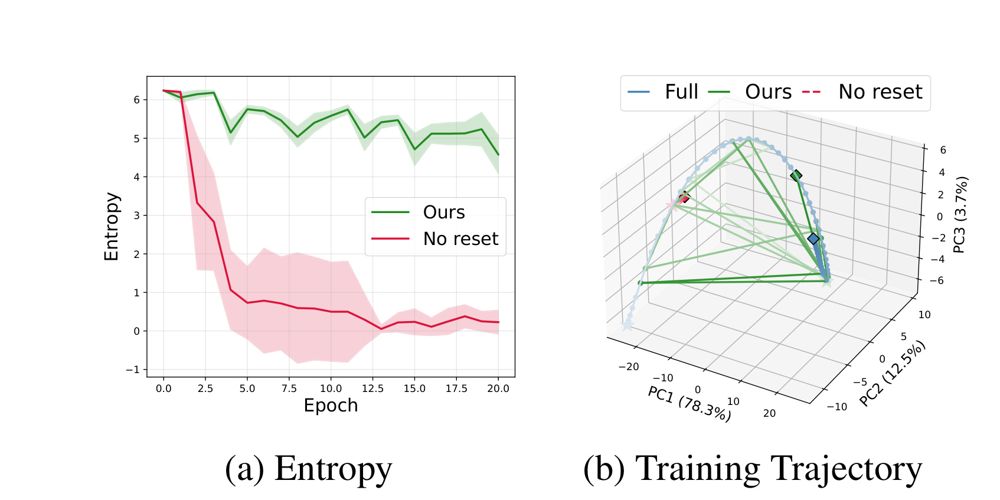
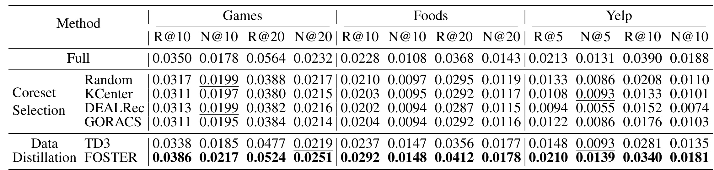
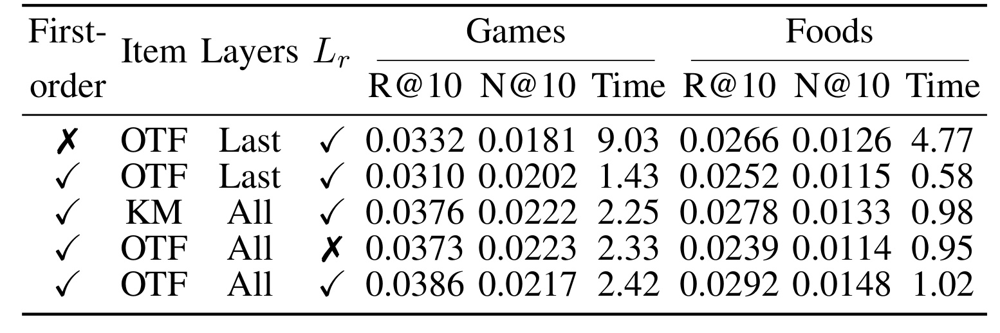
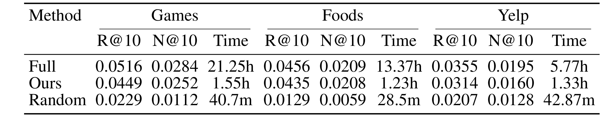
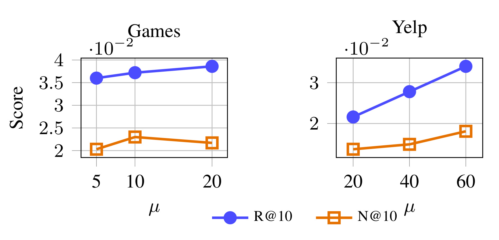
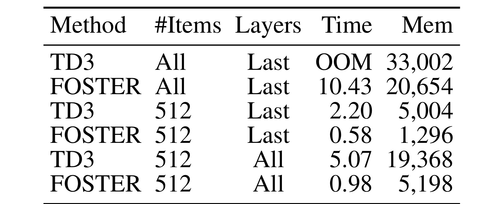
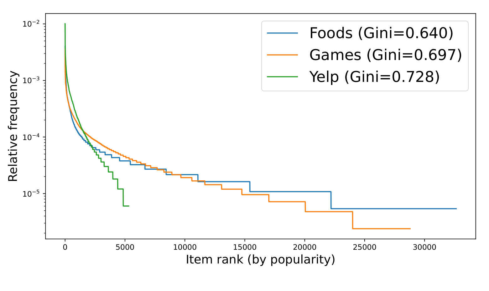

FOSTER: First-order Dataset Distillation for Text-based Sequential Recommendation 讨论的是文本序列推荐里的一个很具体但越来越重要的问题：当推荐模型不再只把 item ID 当成离散符号，而是用 BERT、Qwen、LLM 或其他语言模型去编码商品标题、描述、评论摘要等文本元数据时，模型的冷启动和泛化能力会上升，但训练成本也会被文本编码器和大规模 item catalog 放大。论文一作 Hung Vinh Tran 来自 The University of Queensland，合作作者包括 Griffith University 的 Junliang Yu 和 Amazon International Machine Learning 的 Julien Monteil。论文入口：arXiv:2605.30772。本轮没有在 PDF 或 arXiv 页面中核验到独立代码/项目页。
1. 背景和问题
序列推荐的基本任务，是根据一个用户过去按时间排列的交互序列，预测他下一步最可能访问、点击、购买或评分的 item。传统 ID-based sequential recommendation 直接为每个 item 学一个 embedding，模型只需要处理 item ID 序列；这种做法高效，但它把 item 当成没有语义的符号，遇到冷启动 item、稀疏 item、跨域迁移时容易受限。文本序列推荐的做法是把 item 的标题、描述或其他文本内容送入语言模型，得到语义更丰富的 item embedding，再把这些 embedding 送入序列推荐模型。这样做的好处很直观：模型可以利用“两个商品标题语义相近”“一个电影简介和用户历史偏好相似”这类信号，而不是等到足够多交互之后才学到 item 表示。
但这也让训练成本变得很重。一个推荐系统通常需要周期性更新，因为商品目录、用户偏好、活动页、短视频内容和商家库存都在变化。ID-based 模型更新时主要处理离散索引和 embedding table；text-based 模型还要反复调用或微调语言模型 item encoder。论文中的符号是：每个 item \(v_i\) 对应文本描述 \(d_i\)，item embedding 由
得到，其中 \(l\) 是语言模型编码器，\(\theta\) 是其参数。用户 \(u\) 的交互序列写作 \(I_u=[v_1,v_2,\ldots,v_n]\)，序列模型 \(g_\phi\) 消费 \([e_{v_1},\ldots,e_{v_{|I_u|}}]\)，输出用户表示 \(h_u\)。候选 item \(v\) 的打分是：
这个公式看起来简单，但它隐含了一个关键成本：训练和评估往往需要对大量候选 item 计算 embedding 或分数。如果 item catalog 很大，并且每个 item embedding 都来自文本编码器，那么每一步训练都可能被全目录计算拖慢。
降低训练数据量有两条常见路线。第一条是 coreset selection：从真实训练集中选一小部分代表性用户序列，例如 Random、K-Center、DEALRec、GORACS 这类方法。它们保留真实交互，解释性和实现都比较直接，但小数据集的信息密度受限，尤其当原始数据有噪声时，抽出来的样本仍然可能包含冗余或偏差。第二条是 dataset distillation：不只是挑真实样本，而是生成一组合成训练样本，让模型在这组合成样本上训练后，尽量接近在完整数据上训练的效果。合成样本可以比真实样本更“浓缩”，这也是论文选择数据蒸馏路线的原因。
问题在于，推荐场景的数据蒸馏比视觉分类场景更难。视觉里常见的 first-order dataset condensation 方法经常假设 label space 很小且固定，比如 CIFAR 或 ImageNet 的类别；推荐系统的“类别”就是 item catalog，每个 item 都可能是下一个预测目标，目录规模可以达到几万、几十万甚至更大。已有推荐数据蒸馏方法 TD3 用 Tucker decomposition 把合成序列表示为一个三维概率张量，但它仍然需要在 item 维度上处理全目录概率分布。对文本序列推荐来说，这意味着每个合成位置不是一个 item ID，而是对全体 item 的 soft distribution；每一步都要算大量 item embedding 和概率，语言模型编码器进一步放大了成本。
论文把挑战拆成三个问题。C1 是大 item pool 与文本 token pool 下，如何蒸馏出高质量合成序列而不在每一步都计算全目录。C2 是如何逃出传统 bi-level optimization 的重计算陷阱。数据蒸馏通常有内外两层：内层用合成数据训练模型，外层用真实数据评价这个模型并更新合成数据；如果外层要通过内层训练轨迹反传，计算图会很长，二阶或 through-time 梯度会很贵。C3 是如何保留 item co-occurrence semantics。推荐模型常用 tied embeddings，也就是输入侧和输出侧共享 item embedding；这只有在语义相近的 item 出现在相似上下文里时才合理。如果合成序列破坏了这种共现结构，模型可能在同一个 embedding matrix 上收到互相冲突的训练信号。
FOSTER 的定位就是同时解决这三个问题。它不是提出一个新的推荐 backbone，而是给文本序列推荐的数据蒸馏过程换一套更省的优化方式：第一，用 stochastic item subset sampling 在每一步只采样一小部分 item，而不是对全目录展开；第二，用 first-order constrained optimization 避免常规 bi-level unrolling；第三，用语义共现正则让合成序列更符合 distributional hypothesis。论文的经验结论是，在 Games、Foods、Yelp 三个 benchmark 上，FOSTER 比 coreset 和蒸馏 baseline 更强，并且在 Games/Foods 上用少至 20 条合成序列就能接近甚至超过 full-dataset training 的效果。
这篇论文的价值不在于“推荐系统可以用更少数据训练”这个笼统结论，而在于它认真处理了 text-based sequential recommendation 的两个工程现实：item embedding 来自语言模型，所以全目录计算非常贵；推荐目标空间就是 item catalog，所以不能直接搬视觉数据蒸馏里按类别合成样本的方案。FOSTER 的几项设计都围绕这两个现实展开。
2. 方法
2.1 从 TD3 的 soft synthetic tensor 说起
论文先沿用 TD3 这类推荐数据蒸馏方法的表示方式。给定真实训练集 \(D=\{I_u\}_{u\in U}\)，数据蒸馏希望合成一个小数据集 \(S\)，包含 \(\mu\) 条序列，每条最多长度 \(\zeta\)，满足 \(|S|\ll |D|\)，但模型在 \(S\) 上训练后能接近在 \(D\) 上训练的效果。标准形式是：
符号解释：\(S\) 是待学习的合成数据，\(D\) 是真实训练数据，\(\theta^*(S)\) 是在合成数据上完成内层训练后的模型参数；\(L_{\mathrm{in}}\) 是内层训练损失，表示模型参数 \(\theta\) 如何在合成数据 \(S\) 上学习；\(L_{\mathrm{out}}\) 是外层损失，用真实数据 \(D\) 评价内层学出来的模型。这个目标本身很自然：合成数据好不好，要看用它训练出的模型在真实数据上表现如何。但实现上，若直接把内层训练展开 \(T\) 步并对外层损失反传，就会形成很长的计算图。BPTT 或 random truncated BPTT 可以近似，但仍然保留了 bi-level optimization 的重成本。
在推荐场景中，合成数据不是离散序列，而是一个 soft tensor：
符号解释：\(\mu\) 是合成用户序列条数，\(\zeta\) 是最大序列长度，\(|V|\) 是 item catalog 大小。
其中 \(S_{ij:}\in \mathbb{R}^{|V|}\) 表示第 \(i\) 条合成用户序列在第 \(j\) 个时间步上，对全体 item 的概率分布。这样做的好处是可以用梯度优化原本离散的交互序列；坏处是 item 维度太大。为了降低参数量，TD3/FOSTER 使用 Tucker decomposition：
符号解释：\(G\) 是 Tucker core tensor，\(U\in\mathbb{R}^{\mu\times d_1}\) 是 synthetic user latent factor，\(T\in\mathbb{R}^{\zeta\times d_2}\) 是时间动态 latent factor，\(E\in\mathbb{R}^{|V|\times d_3}\) 是 item factor，通常与预训练 item embedding table 共享。由于 \(d_1,d_2,d_3\ll |V|\)，参数量被压下来了。
但参数量下降不等于每步计算就便宜。真正训练时，合成输入 \(X_i\) 和合成目标 \(y_i\) 都是对 item 的概率分布。模型要把这种 soft distribution 变成 embedding，可以写成对 item embedding table 的加权平均：
符号解释：\(X_i\) 是合成输入位置上的 item 概率分布，\(E\) 是 item embedding table，\(E'_i\) 是按概率加权得到的 soft item embedding。
如果 \(E\) 覆盖全体 item，每一步仍然要把全目录卷进来。FOSTER 的第一个动作，就是把这个全目录计算改成随机子集计算。
2.2 Stochastic item subset sampling：把全目录张量切成每步小目录
FOSTER 在每个 inner step 均匀采样一个 item 子集 \(V_k\subset V\)，子集大小为 \(N\ll |V|\)，然后只取这些 item 对应的 embedding table：
符号解释：\(V_k\) 是第 \(k\) 步采样到的 item 子集，\(N\) 是子集大小，\(d\) 是 item embedding 维度，\(E_k\) 是只包含这些采样 item 的 embedding table。
合成 batch 不再用全量 \(E\)，而是：
符号解释：\(S_k\) 是在当前采样 item 子集上构造出的合成 batch，它沿用同一组 \(G,U,T\)，但把 item mode 从全量 \(E\) 替换为 \(E_k\)。
直觉上，这类似推荐训练里的 negative sampling：不用每次对所有 item 做 full softmax，而是用采样候选近似目标。区别在于，FOSTER 的采样发生在合成张量的 item mode 上，并且内外层优化都一致使用这个近似。它并不是先生成一个完整的 \(\mu\times\zeta\times |V|\) 张量再裁剪，而是在每一步直接基于采样子目录构造 soft sequence，从源头上减少计算。
这个设计解决 C1 的主要成本。对 text-based sequential recommendation 来说，\(N\) 不是一个小细节，而是决定每步是否能在单卡上跑下来的变量。论文在附录里用 \(N=256,512,1024\) 做敏感性实验，主效率实验重点展示 \(N=512\) 的结果。它的含义是：FOSTER 接受每一步只看到 item catalog 的一个随机切片，但通过多步迭代不断换切片，让合成数据仍能吸收全局 item 分布的信息。
2.3 三组件总览：采样、一阶图、语义正则
FOSTER 的主流程可以看成三个组件串联。第一步从真实数据 \(D\) 得到预训练轨迹和 item embedding；第二步初始化 Tucker 参数化的合成数据 \(S\)；第三步在每轮优化中采样 item 子集、更新内层模型参数和外层合成数据，并加上共现语义正则。

Figure 1 左侧把 pipeline 画成了三块：stochastic item sampling 把 \(|V|\) 的全目录压成 \(N\ll |V|\) 的随机子集；single-level computational graph 同时进行 inner variable update 和 outer variable update；regularization loss 用语义距离 \(d_s\) 与条件距离 \(d_c\) 的差异约束合成序列。右侧对比了 BPTT 和 BOME。BPTT 要沿着 \(S\rightarrow \theta^{(0)}\rightarrow \theta^{(1)}\rightarrow \cdots \rightarrow \theta^{(T)}\rightarrow L_{\mathrm{out}}\) 的完整轨迹反传；BOME/FOSTER 则用约束 \(q\) 近似内层最优条件，把更新变成一阶梯度可解的单层问题。这个图是理解全文的关键：FOSTER 不是只做 item sampling，也不是只做一阶优化，而是把两者和语义正则放进同一个蒸馏循环。
2.4 First-order constrained optimization：把 bi-level 约束化
论文借鉴 BOME，把 bi-level 问题改写为单层约束优化。定义内层最优差距：
符号解释：\(q(S,\theta)\) 衡量当前参数 \(\theta\) 距离“在 \(S\) 上达到内层最优”的差距；若 \(\theta\) 已经等于或达到 \(\theta^*(S)\)，这个差距为 0。
由于 \(\theta^*(S)\) 是在 \(S\) 上的内层最优解，所以 \(L_{\mathrm{in}}(S,\theta)\ge L_{\mathrm{in}}(S,\theta^*(S))\)，因此 \(q(S,\theta)\ge 0\)。只有当 \(\theta\) 也是内层最优时，\(q=0\)。于是原来的 bi-level 目标可写成：
符号解释：这里同时把 \(S\) 和 \(\theta\) 当成单层优化变量，约束 \(q(S,\theta)\le 0\) 用来恢复内层最优条件。
因为 \(q\) 总是非负，所以 \(q\le 0\) 等价于强制 \(q=0\)，也就是强制 \(\theta\) 满足内层最优。理论附录进一步说明，在内层一阶最优条件下，值函数梯度里对 \(\theta^*(S)\) 的雅可比依赖会消失，这使得约束梯度可以通过一阶项处理，而不必显式穿过 \(\theta^*(S)\) 的求解过程。
实际算法里，\(\theta^*(S)\) 不可得。FOSTER 用从当前 \(\theta\) 出发在 \(S\) 上训练 \(T\) 步得到的 \(\theta_T\) 近似，并加 stop-gradient：
符号解释：\(\theta_T\) 是从当前 \(\theta\) 出发在合成数据上训练 \(T\) 步得到的近似内层解，\(\mathrm{sg}\) 是 stop-gradient，表示外层更新不穿过 \(\theta_T\) 的构造路径。
\(\mathrm{sg}(\cdot)\) 的作用是阻断反向传播穿过 \(\theta_T\) 的构造过程。也就是说，算法仍然会做 \(T\) 步内层训练来估计“更接近内层最优”的状态，但外层更新不再对这 \(T\) 步完整反传。这样一来，FOSTER 避免了常规 bi-level dataset distillation 中最贵的 through-time gradient。
更新方向由动态 barrier 给出。第 \(k\) 个 outer step 记 \(L_k=L_{\mathrm{out}}(\theta_k,S_k,D_k)\)，\(\hat q_k=\hat q(S_k,\theta_k)\)，则：
符号解释：\(\delta_k\) 是第 \(k\) 步更新方向，\(L_k\) 是当前外层损失，\(\hat q_k\) 是当前约束近似，\(\eta\) 控制 barrier 强度，\(\lambda_k\) 是动态计算出的约束权重。这里 \(\lambda_k\) 会根据外层损失梯度和约束梯度的夹角动态调整。如果 \(\nabla L_k\) 本身已经有助于降低约束，\(\lambda_k\) 可以小；如果优化外层损失会让内层最优约束恶化，barrier 项就会更强。论文固定 \(\eta=0.5\)。这套机制对推荐数据蒸馏很重要，因为合成数据 \(S\) 和模型参数 \(\theta\) 同时更新时，很容易为了短期外层表现而走向不真实的模型状态。
2.5 Trajectory-anchored reset：防止合成序列和模型共同坍缩
仅仅把 bi-level 改成 first-order 还不够。论文指出，如果从零开始同时优化合成数据 \(S\) 和模型参数 \(\theta\)，\(S\) 会过拟合到这条共同演化的 \(\theta\) 轨迹。换句话说，合成数据可能只会训练好“和它一起长大”的那个模型状态，而不能训练好一个独立初始化、正常训练出来的推荐模型。这会导致蒸馏数据失去可迁移性。
FOSTER 的处理是 trajectory-anchored parameter reset。先在真实数据 \(D\) 上预训练模型，并记录一组真实训练轨迹 checkpoint：
符号解释：\(\mathcal{T}\) 是真实数据预训练过程中保存下来的 checkpoint 池，\(\bar\theta_m\) 表示第 \(m\) 个真实训练轨迹参数状态。
在蒸馏过程中，每隔 \(R\) 个 outer loop，就从这组轨迹里采样一个 checkpoint，并执行：
符号解释：\(R\) 是 reset interval，\(\theta_k\) 是当前内层参数；赋值操作表示用真实轨迹 checkpoint 重新锚定当前模型状态。
这个 reset 和 MTT 类方法的目标不同。MTT 通常试图让合成数据训练出的轨迹匹配真实训练轨迹；FOSTER 不是要逐步复刻轨迹，而是让当前内层模型重新锚定到“真实训练能到达的模型状态”附近，再继续改进这个 checkpoint。这样做的效果是：合成数据不能只服务于一个从头共同优化出来的奇怪 \(\theta\)，而要能在多个真实轨迹状态上提供有用梯度。

Figure 2 左图显示，no reset 情况下合成序列在 512 个采样 item 上的平均 entropy 很快下降，说明合成数据坍缩到很窄的一小批 item；FOSTER 的 entropy 则保持在更高水平，代表 soft sequence 没有过早塌缩。右图把 inner parameters 投影到真实 full-data trajectory 的 PCA 空间：no reset 会漂离真实训练轨迹，FOSTER 则更贴近 full trajectory 的流形。这个图说明 reset 不是一个训练技巧装饰，而是在一阶 joint optimization 下维持数据可迁移性的关键约束。
更细地看，左图里红色 no reset 曲线在前几个 epoch 后迅速掉到接近 0 的 entropy，这意味着每个合成位置几乎只把概率压到极少数 item 上，蒸馏过程失去了 soft distribution 原本应有的覆盖能力。右图里绿色轨迹虽然不是逐点贴合 full trajectory，但仍围绕真实训练轨迹移动；这正是 FOSTER 想要的状态：不需要复制真实训练每一步，却要避免跑到真实训练永远不会到达的参数区域。
2.6 Co-occurrence regularization：让合成序列符合 tied embedding 的语义前提
第三个组件针对 C3。推荐模型常用 tied embeddings：同一个 item embedding matrix 同时用于输入序列编码和输出候选打分。这个设计背后的 distributional hypothesis 是，语义相关的 item 应该出现在相似上下文中。比如两款相近的游戏、两种相似食品、两个同类商家，如果在 item 文本语义上接近，那么它们在用户序列里也应该具有某种可替换或相邻共现关系。真实数据里这种关系来自用户行为；合成数据如果只追求最终指标，可能会把语义上接近的 item 放进互相矛盾的上下文，导致共享 embedding 收到冲突梯度。
论文定义两类距离。第一类是 semantic distance \(d_s(u,v)\)，用固定预训练模型 \(f\) 作为代理。若把上下文 \(p\) 中的 item \(u\) 替换成 \(v\) 后，模型输出变化很小，则 \(u\) 和 \(v\) 被视为语义等价或接近。形式上可以理解为：
符号解释：\(u,v\) 是两个 item，\(p\) 是上下文，\(f(p,u)\) 表示把 item \(u\) 放入上下文后固定模型的输出，\(l(\cdot,\cdot)\) 是输出差异度量，\(d_s\) 表示语义替换后模型输出变化有多大。
其中 \(l(\cdot,\cdot)\) 表示输出差异度量。第二类是 conditional distance \(d_c(u,v)\)，衡量两个 item 在合成数据 \(S\) 的上下文分布里是否相近：
符号解释：\(P_S(u|p)\) 是合成数据中上下文 \(p\) 下 item \(u\) 的条件概率，\(d_c\) 衡量 \(u\) 与 \(v\) 在合成序列上下文里的条件分布差异。
最终正则项是：
符号解释：\(L_r\) 惩罚语义距离与条件距离不一致，若两个 item 语义接近但在合成数据里上下文差异很大，正则会变大。
完整目标可以写成：
符号解释：\(\lambda_r\) 是正则权重，用来平衡真实数据外层表现和合成序列的语义共现一致性。
这意味着：如果两个 item 在文本语义上相近，合成序列也应该让它们在条件上下文上接近；如果语义上差很远，合成序列不应把它们强行放进相似角色。这个正则不是为了让合成数据更像自然语言文本，而是为了让 soft item sequence 与推荐模型的 tied embedding 假设一致。它补的是 dataset distillation 容易忽略的一类结构信息：真实用户序列里的 co-occurrence semantics。
2.7 算法执行顺序
FOSTER 的完整算法分为 prepare 和 distillation 两段。Prepare 阶段先在真实数据 \(D\) 上训练模型，得到预训练轨迹；再编码所有真实 item，得到用于 Tucker 分解的 item embedding table。主蒸馏阶段初始化 \(S\) 的参数 \(\{T,G,U\}\)，然后重复如下过程：如果达到 reset interval \(R\)，就从预训练轨迹中采样 checkpoint；接着在合成数据上训练 \(\theta\) 共 \(T\) 步来估计 \(\theta^*\)；计算 \(\hat q(S,\theta)\) 和 \(\lambda_k\)；最后用 \(\nabla L+\lambda_k\nabla q\) 更新 \(S\) 和 \(\theta\)。
这个顺序有两个容易误解的点。第一，FOSTER 不是完全不训练内层模型。它仍然需要做 \(T\) 步内层训练，只是不把这 \(T\) 步作为可反传的长计算图。第二，item sampling 不是只作用在内层训练，它也进入 outer/constraint 相关计算，使得整个蒸馏循环都在采样子目录上运行。这样才真正减少了每步成本，而不是在某个局部阶段省一点算力。
从工程角度看，FOSTER 的方法部分可以概括为“用真实轨迹限制模型状态，用随机 item 子集限制目录规模，用一阶约束限制反传路径，用共现正则限制语义结构”。四个限制分别对应稳定性、可扩展性、计算成本和推荐语义。正因为这些限制同时存在，FOSTER 才能把文本序列推荐的数据蒸馏从理论可行推进到单卡可跑的设定。
3. 实验结果
3.1 实验设置和主结果
论文使用三个代表性数据集：Amazon Games、Amazon Foods 和 Yelp。预处理来自 RecBole，先按时间排序交互，再做 5-core 过滤；Yelp 额外限制在 Nashville city。训练时对长序列使用 sliding window，评估时截断到最后 20 个交互。Table 1 的统计是：Games 有 559,128 条交互、35,995 个 item、61,639 个用户，平均长度 9.07；Foods 有 251,085 条交互、45,833 个 item、25,079 个用户，平均长度 10.01；Yelp 有 214,722 条交互、5,927 个 item、17,272 个用户，平均长度 12.43。
Baseline 包括 Full training、Random、KCenter、DEALRec、GORACS 和 TD3。Full training 是完整真实数据训练；Random/KCenter/DEALRec/GORACS 属于 coreset selection；TD3 是 Tucker decomposition based dataset distillation baseline。评价指标是 Recall 和 NDCG，在 Games/Foods 上报告 R@10/N@10/R@20/N@20，在 Yelp 上报告 R@5/N@5/R@10/N@10。

Table 2 的主结论很直接。Games 上，FOSTER 的 R@10/N@10/R@20/N@20 是 0.0386/0.0217/0.0524/0.0251，R@10 和 N@10 高于 Full 的 0.0350/0.0178，也高于 TD3 的 0.0338/0.0185。Foods 上，FOSTER 的 R@10/N@10/R@20/N@20 是 0.0292/0.0148/0.0412/0.0178，同样超过 Full 的 0.0228/0.0108/0.0368/0.0143 和 TD3 的 0.0237/0.0147/0.0356/0.0177。Yelp 上，FOSTER 的 R@5/N@5/R@10/N@10 为 0.0210/0.0139/0.0340/0.0181，其中 R@10 接近 Full 的 0.0390，且显著超过 TD3 的 0.0281；但 Full 在 Yelp 上仍有更高 R@10/N@10。
这里最值得注意的不是“FOSTER 总是比 Full 更强”，因为 Yelp 上并非如此；而是它在极小合成集下仍能接近 Full，且比 coreset selection 和 TD3 更稳。论文解释 Games/Foods 上超过 Full 的现象时提到 noise-reduction effect：合成数据可能过滤掉真实训练集里的噪声和冗余，从而在小规模训练下反而更干净。这个解释合理，但也要谨慎，因为它不意味着合成数据天然优于真实数据，而是说明在这些 benchmark、这些预算和 backbone 设置下，蒸馏样本的信息密度更高。
3.2 消融：一阶优化、采样方式、训练层数和正则
Table 3 对几个组件做了拆解。它变化四个因素：是否使用 first-order，item selection 是 on-the-fly sampling 还是 K-means，inner problem 只训练 last layer 还是 all layers，以及是否使用 \(L_r\) 正则。这里的 Time 是每 epoch runtime，单位分钟。

几个现象很关键。第一，BPTT/非一阶路线在表中对应 first-order 打叉的设置，Games R@10/N@10 为 0.0332/0.0181，Foods 为 0.0266/0.0126，时间分别 9.03 和 4.77 分钟；一阶 OTF last-layer 设置虽然 Games R@10 只有 0.0310，但时间大幅降到 1.43/0.58 分钟。这说明 first-order 的主要意义是把计算成本压下来，而不是单独保证最好精度。
第二，使用 K-means 选 item 子集并训练 all layers 的设置在 Games 上得到 0.0376/0.0222，Foods 上 0.0278/0.0133，时间 2.25/0.98；完整 FOSTER 使用 OTF、all layers、\(L_r\)，Games 0.0386/0.0217，Foods 0.0292/0.0148，时间 2.42/1.02。OTF 的好处是每步随机覆盖不同 item 子集，不需要预先聚类，也更符合大型目录动态抽样的工程形态。它在 Foods 上尤其有优势。
第三，去掉 \(L_r\) 正则时，Games 0.0373/0.0223 看起来仍强，但 Foods 掉到 0.0239/0.0114。这个结果支持论文对 C3 的判断：co-occurrence regularization 不一定在所有数据集上都以同样幅度提升，但它能避免某些文本推荐数据集里合成序列破坏语义共现结构。对于推荐模型的 tied embedding，Foods 这类 item 文本语义和用户共现关系更强的数据，可能更需要 \(L_r\)。
消融还应和 Figure 2 一起看。Table 3 告诉我们完整组件的指标和时间；Figure 2 告诉我们为什么 reset 是必要的稳定机制。若没有 reset，first-order joint optimization 容易让 \(S\) 变成只服务当前 \(\theta\) 的低熵集合；若没有 \(L_r\)，\(S\) 可能保留了指标信息却损伤语义共现；若没有 sampling，整个方法又回到全目录计算瓶颈。三者不是独立技巧，而是互相补位。
3.3 跨 backbone 迁移：合成数据是否绑定原模型
论文还做了 transfer learning 实验：用 TinyBERT 作为 distillation backbone 生成合成数据，再用 Qwen3-4B 作为 downstream model 训练。这个实验非常重要，因为如果合成数据只对生成它的 backbone 有用，那么 FOSTER 更像是一种模型特定压缩；如果它能迁移到更大的文本编码器，就说明合成序列保留了更一般的推荐训练信号。

Table 4 显示，Games 上 Full Qwen3-4B 是 R@10/N@10 0.0516/0.0284，耗时 21.25h；Ours 是 0.0449/0.0252，耗时 1.55h。Foods 上 Full 是 0.0456/0.0209，13.37h；Ours 是 0.0435/0.0208，1.23h，几乎贴近完整训练。Yelp 上 Full 是 0.0355/0.0195，5.77h；Ours 是 0.0314/0.0160，1.33h。Random coreset 在三个数据集上明显更弱。
这个结果说明，FOSTER 合成数据不是简单记住 TinyBERT 的输出分布。尤其 Foods 上，迁移到 Qwen3-4B 后指标几乎追平 Full，训练时间却从 13.37h 降到 1.23h。对实际系统来说，这一点很有吸引力：可以用较小 backbone 或较省的设置蒸馏出合成训练集，再把它用于更重的下游文本编码器，从而减少高成本模型的训练时间。当然，这也依赖合成数据没有过度贴合 TinyBERT 的内部表示；trajectory reset 和 \(L_r\) 正则在这里提供了间接支撑。
3.4 合成序列数量：20 条够不够
论文摘要里提到 FOSTER 可以用 as few as 20 synthetic interaction sequences 接近 full-dataset performance。附录 Figure 5 展示了不同 \(\mu\) 下的表现。

Games 上，\(\mu=5,10,20\) 时 R@10 大约从 0.036 上升到接近 0.039，N@10 在 \(\mu=10\) 左右较高，\(\mu=20\) 略有波动但仍保持强表现。Yelp 上，\(\mu=20,40,60\) 时 R@10/N@10 都随 \(\mu\) 增加而明显上升，\(\mu=60\) 才更接近主结果。这个差异提醒我们，“20 条合成序列”不是所有数据集的固定答案。Games/Foods 的长尾和语义结构让少量合成序列就能承载较多信息；Yelp 的分布更陡，item catalog 更小但尾部信号更弱，需要更多序列才能覆盖足够模式。
这也解释了为什么论文没有把 FOSTER 描述成一个固定压缩率算法。它的压缩能力和数据集的用户行为分布、item 长尾、文本语义质量、采样 item 数 \(N\)、reset interval \(R\)、正则权重 \(\lambda_r\) 都有关。实际复现时，\(\mu\) 应该和验证集表现一起调，而不是照搬 20。
3.5 效率：为什么它能跑在单卡预算内
效率是这篇论文的主线之一。Table 5 在 Foods 上比较 per-epoch runtime 和 peak GPU memory，硬件是单张 NVIDIA RTX A5000 24GB。这个设置很有现实感，因为很多推荐研究和中小团队无法为每轮蒸馏提供大规模多卡资源。

结果非常清楚：TD3 在 all items、last layer 设置下直接 OOM，峰值显存记录为 33,002MB，超过 24GB 预算；FOSTER 在 all items、last layer 下仍能跑，但需要 10.43 分钟和 20,654MB。真正体现 stochastic item sampling 的是 512-item 设置：TD3 512 last-layer 需要 2.20 分钟和 5,004MB，FOSTER 512 last-layer 只需要 0.58 分钟和 1,296MB；TD3 512 all-layer 需要 5.07 分钟和 19,368MB，FOSTER 512 all-layer 是 0.98 分钟和 5,198MB。
这些数值说明两件事。第一，item subset sampling 直接把显存和时间打下来，因为每步不再展开全目录。第二，first-order optimization 对 all-layer fine-tuning 尤其关键。若要训练文本 encoder 的更多层，bi-level through-time 计算会非常贵；FOSTER 的一阶约束更新使 all-layer 设置仍然在 5GB 级别，而不是逼近或超过显存上限。
Table 6 虽未截图进入正文，但论文给出的数值也值得记录。在 Foods 上，TinyBERT full training 0.0228/0.0108，耗时 22.2m；FOSTER 合成数据训练 0.0292/0.0148，耗时 3.7m。Qwen3-0.6B full 是 0.0292/0.0148，7.5h；Ours 是 0.0368/0.0179，54.2m。Qwen3-4B full 是 0.0391/0.0182，13.4h；Ours 是 0.0435/0.0208，1.2h。换句话说，FOSTER 不只是蒸馏阶段省；用合成数据训练最终推荐模型也显著省。
3.6 Yelp 为什么弱一些：尾部分布和梯度信号
论文没有只报好结果，也分析了 Yelp 相对弱的原因。Figure 7 画出 Foods、Games、Yelp 的 item popularity distribution。三个数据集都有 power-law decay，但细节不同：Foods 和 Games 有超过 30,000 item 的长尾；Yelp 只有约 5,000 item，尾部更短、更陡，并且 cutoff 更突然。

这张图和主结果相互解释。Yelp 的 Gini=0.728，高于 Games 的 0.697 和 Foods 的 0.640，说明流行度更集中。短而陡的尾部意味着大量尾部 item 在训练时几乎没有梯度信号，合成序列优化更容易集中到热门 item。FOSTER 的 \(L_r\) 可以缓解语义共现失真，但不能凭空制造真实数据里缺失的长尾行为信号。因此 Yelp 上 FOSTER 虽然超过 TD3 和 coreset baseline，但没有像 Games/Foods 那样稳定追平或超过 Full。
这个分析对工程使用很重要。如果一个推荐业务的 item 分布极端头部集中，或者尾部 item 文本语义很弱、交互很少，那么数据蒸馏可能会把训练预算进一步投向热门 item，导致尾部覆盖不足。此时需要额外的约束，例如按 item popularity 分桶采样、tail-aware regularization、冷启动 item 的文本增强，或者在合成序列预算里显式保留尾部覆盖，而不能只依赖 FOSTER 的默认随机 item sampling。
4. 总结
FOSTER 的主要贡献，是把文本序列推荐的数据蒸馏从“理论上可以压缩训练数据”推进到“能在大 item catalog 和语言模型 item encoder 下更省地优化”。它解决的不是推荐模型结构本身，而是训练数据和训练过程的压缩问题。三项设计分别对应三个瓶颈：stochastic item subset sampling 处理全目录 item 概率张量太贵的问题；first-order constrained optimization 处理 bi-level unrolling 太贵的问题；trajectory-anchored reset 和 co-occurrence regularization 处理合成数据可迁移性和语义结构失真的问题。
我认为这篇论文最强的部分是问题拆解很贴近推荐工程。很多数据蒸馏论文会把压缩率和精度作为主叙事，但 FOSTER 明确指出推荐系统的 label space 就是 item catalog，文本推荐还叠加了语言模型编码器，因此不能直接套视觉分类里的 first-order condensation。它也没有把随机采样当作单独技巧，而是配合一阶约束和真实轨迹 reset 使用。这使得方法更像一个完整训练系统，而不是某个局部近似。
它的边界也比较清楚。第一，超参数敏感性仍存在。论文提到 \(\lambda_r\) 太小会在 Games 上 collapse，太大又可能损害 Foods；reset interval \(R\) 也需要按数据集调。第二，Yelp 结果说明 FOSTER 对数据分布仍敏感，短尾且流行度高度集中的数据会让合成序列偏向热门 item。第三，论文没有在更大工业级 item catalog、在线增量更新、真实冷启动评估或多模态 item 文本/图像混合编码上验证。第四，代码/项目页本轮未核验到，复现实验还需要等待作者释放实现或自行重写 Tucker、采样、一阶约束和正则流程。
如果把 FOSTER 放进实际推荐系统，我会优先把它看成“周期性重训的训练集压缩器”，而不是完全替代真实数据训练。更稳妥的使用方式是：先在完整数据上训练并记录若干 checkpoint，离线蒸馏一组小 synthetic sequences；随后在频繁模型刷新、backbone 对比、快速 ablation 或资源受限部署中，用合成数据做快速训练和筛选。对尾部 item、冷启动 item 和业务关键 item，则需要额外检查覆盖率，不应只看全局 Recall/NDCG。
从研究延展看，有几个方向值得跟进。第一，把 item subset sampling 改成 popularity-aware 或 uncertainty-aware，而不是完全均匀采样。第二，把 \(L_r\) 的语义距离从固定预训练模型输出扩展到多源语义，比如标题、评论、类目、图像和用户 query。第三，研究合成序列对不同 downstream backbone 的迁移边界：TinyBERT 到 Qwen3-4B 已经有结果，但更大 LLM、不同 pooling、不同推荐架构之间是否同样成立还不确定。第四，把 FOSTER 和 continual recommendation 结合，因为推荐系统真正需要的是每天或每小时更新时的低成本适配。
总的来说，FOSTER 是一篇推荐算法里偏“训练效率 + 数据压缩”的论文。它的亮点不是某个复杂模型，而是把推荐数据蒸馏的三类成本逐一拆开并给出可运行方案。对关注文本推荐、LLM-based recommendation 或大目录训练成本的人，这篇值得精读；对只关心线上排序精排指标的人，它更像一个候选训练基础设施，需要结合业务数据分布和更新频率再判断落地价值。